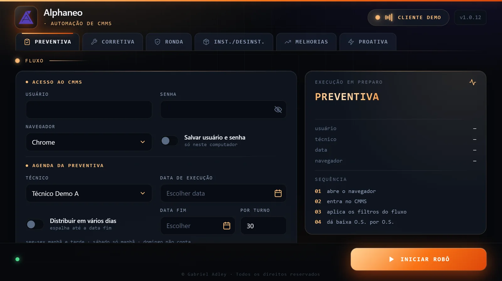

Alphaneo
A Windows desktop robot that bulk-closes preventive, corrective and patrol work orders in a third-party web maintenance system (CMMS), and keeps itself up to date.
Um robô desktop para Windows que dá baixa em lote em ordens preventivas, corretivas e de ronda num sistema web de manutenção de terceiros (CMMS), e se mantém atualizado sozinho.

The same form, hundreds of times a month.
O mesmo formulário, centenas de vezes por mês.
Every completed work order had to be closed by hand in the client's web system: open it, pick the technician, fill dates and service text, save, repeat. It ate hours of the operations team's week and was easy to get wrong.
Cada ordem concluída tinha que ser baixada à mão no sistema web do cliente: abrir, escolher o técnico, preencher datas e texto do serviço, salvar, repetir. Isso consumia horas da semana da equipe de operação e era fácil de errar.
A desktop app that never freezes and updates itself.
Um app desktop que nunca trava e se atualiza sozinho.
⚙️ Worker process
⚙️ Processo separado
The bot runs in its own process, so the UI stays responsive. UI and bot talk through lightweight file-based messages, and credentials are never written to disk.
O robô roda no próprio processo, então a interface continua responsiva. Interface e robô conversam por mensagens leves em arquivo, e as credenciais nunca vão para o disco.
🎨 Tkinter → WebView2
🎨 Tkinter → WebView2
The UI was rebuilt in HTML/CSS/JS on pywebview (WebView2), with smooth GPU-rendered animations instead of a laggy Tk loop.
A interface foi refeita em HTML/CSS/JS com pywebview (WebView2), com animações suaves na GPU no lugar do loop travado do Tk.
🔄 Self-updating
🔄 Auto-atualização
On start, the app checks the GitHub Releases API, compares versions, downloads the new installer and runs it silently. Users never install anything by hand.
Ao abrir, o app consulta a API de Releases do GitHub, compara versões, baixa o instalador novo e roda em silêncio. Ninguém instala nada à mão.
🚀 One-command release
🚀 Release com um comando
A script bumps the version, builds the .exe with PyInstaller, compiles the Inno Setup installer, commits to the private source repo and publishes the public release.
Um script sobe a versão, gera o .exe com PyInstaller, compila o instalador Inno Setup, faz commit no repositório privado e publica o release público.
Source code is private; the GitHub page hosts the installer and releases.
O código é privado; a página no GitHub hospeda o instalador e os releases.